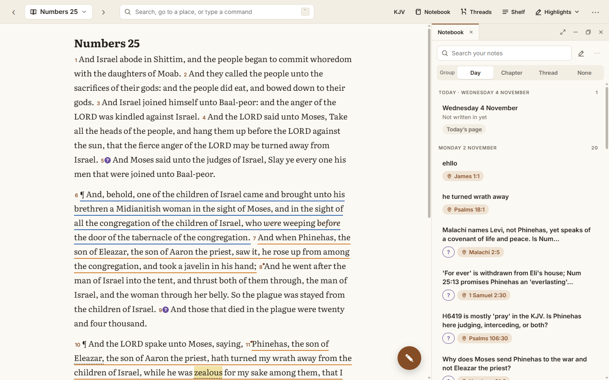
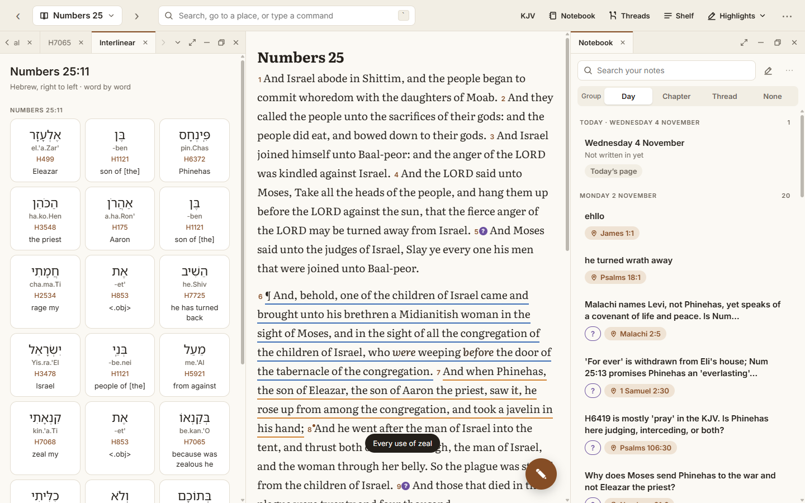
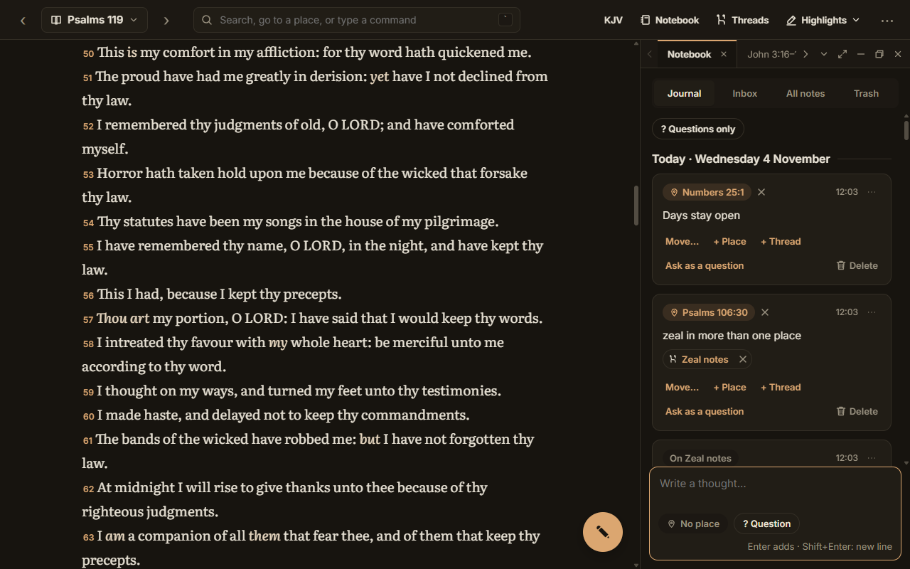
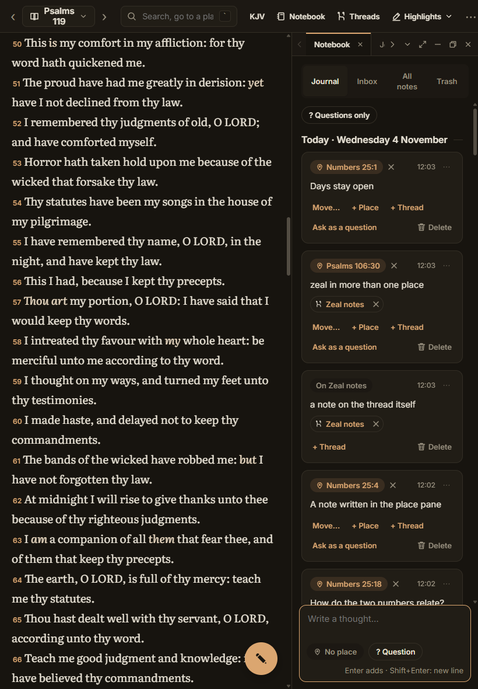
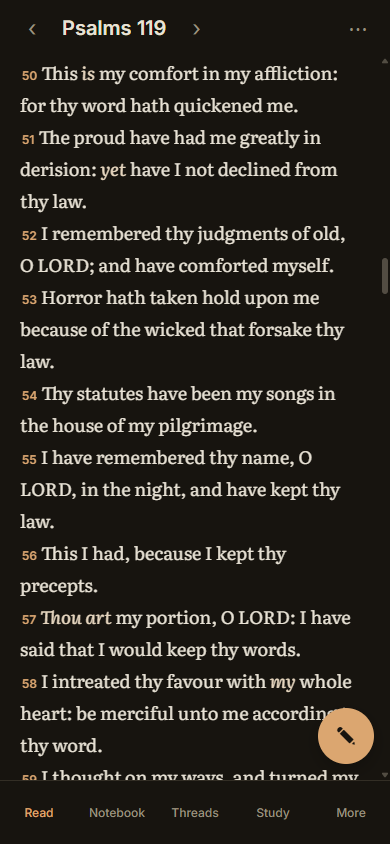

Read
The chapter is drawn word by word, so a highlight, a thread underline and a question mark sit exactly on the words they belong to. KJV or YLT, with the verse numbers, the supplied words in italics and the words of Jesus in their own color.
A personal Bible study workbench
The KJV and YLT with Strong’s, the lexicons and the interlinear, beside your own notes, highlights and threads — kept as plain files you can read by hand.

01 · The loop
Study is not a feed and not a search result. It is a chapter, read slowly, with what you find kept next to the words that gave it to you.
The chapter is drawn word by word, so a highlight, a thread underline and a question mark sit exactly on the words they belong to. KJV or YLT, with the verse numbers, the supplied words in italics and the words of Jesus in their own color.
Select a phrase and write: a note, a question, a highlight in one of five colors, or another place in a thread. Capturing a thought never takes you away from the verse.
The Notebook keeps every note by the day you wrote it, an Inbox for thoughts with no verse yet, and all your notes in Bible order. Anything opened from the text comes back to where it came from.
02 · The workbench
Panes open beside the chapter, not over it. Close them and the place stays. Nothing is drawn from a commentary or a suggestion — the text, the tools, and your own work.
Every quotation carries where it came from. The app shows the source text, your notes and your lookups; it interprets nothing and suggests nothing.
Strong’s numbers on the original words, the lexicons and BDB, and the interlinear right to left for Hebrew. Every use, a count by book, forms and near — each in a pane of its own.
Five colors, your own saved ones, and thread underlines stacked over the words. Layers turn each thread on and off, so one passage can show several threads at once.
A journal by day, an Inbox for thoughts not placed yet, and all notes in Bible order. Place a note on a verse by typing it, picking the verse, or dragging the note onto it.
A plan lists its days and readings, with a plain answer for the days that were missed. A day opens at its first place, and nothing counts streaks or sends a reminder.
One language for everything: open, note, hl yellow, uses H7065. The same lines run in a terminal as wb, because every action in the window is a command.
03 · Word study
Click a word and the interlinear opens: the Hebrew or Greek, its transliteration, its Strong’s number and its English rendering. From there, the lexicon entry, BDB, every use and a count by book — each one a pane that docks beside the chapter rather than replacing it.
A rendering can be followed on its own: the verses where this word is translated that way, not every occurrence of the number. Each row opens its verse, and the chapter is still where you left it.

04 · Your files
Notes are one Markdown file each, with front matter. Highlights are JSON, one file per book. Threads, questions, plans and the day’s log are files too. The Python app this replaces reads the same formats, so the folder stays readable in both — and in Obsidian — while one replaces the other.
A deleted note or question waits in .trash for seven days and can be put back. Erasing it now asks first. Nothing else in the folder is ever erased.
A note can sit on verses that are not next to each other, and shows at each of them — in the margin, in the notes on a place, and on its own card.
Opening a pane, resizing the window, crossing a size class or changing the text size keeps the verse at the top where it was.
The Bible database opens with SQLite’s read-only flag. The only files the app writes are yours.
The study folder
bible-study-data/the folder you ownnotes/one Markdown file per noteNUM/6f9f.mda note at its place_inbox/a thought with no verse yet_days/2026-11-04.mdthe day’s page_threads/notes written on a thread_words/H7065/notes on an original wordhighlights/NUM.jsonone file per bookthreads/phinehas.mda named, ordered set of placestrails/8c31.mdan open questionreading/plans/one file per planreading/log.jsonlthe chapters readsessions/2026-11-04.jsonlthe day’s command lines.trash/deleted, kept seven days05 · Every size
The layout follows the window’s width, live: one stack and sheets on a phone; the reader with one pane beside it on an iPad in portrait; docked columns and a command field on a laptop. Touch gets tap cards; a pointer gets hover cards and the color bar; a keyboard gets the backtick field, the arrow keys and shortcuts.



719ms
Cold start to the last place
60–91ms
A chapter drawn
8ms
Search results
Release build in WebView2, with the web view’s CPU slowed 4× — the phase 2 measurements. The budgets and the raw numbers are kept with the code.
Where it stands
Bible Workbench is a Rust core and a plain TypeScript UI in Tauri 2, rebuilt from a Python app that reads the same folder. The desktop is built and in use on the real study folder since 2 November 2026; the phone and the tablet are the next phases, from the same core. The plan, the design decisions and each phase’s results are kept with the code, the tests and the measurements beside them.
Rust core · Tauri 2 shell · plain TypeScript UI · no framework, no accounts
Back to the top